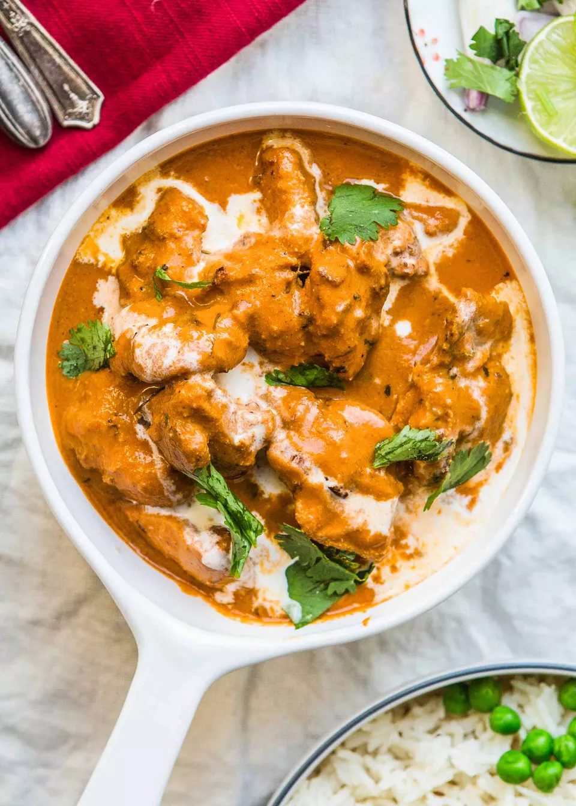

Butter Chicken

What is butter chicken?
Butter chicken is prepared with marinated chicken that's first grilled and then served in a
rich gravy (a.k.a. curry) made with tomato, butter, and a special spice blend as a base.
Unlike most Indian curries where the preparation of the base starts with a blend of onion
and a ginger garlic paste cooked in oil, butter chicken uses tomato as a base and is cooked in butter,
giving it a slightly sweet flavor. Cashews and almonds add to the sweetness and richness of the dish.
Ingredients
- 1 pound boneless, skinless chicken thighs, cut into roughly 1-inch cubes
- 1/4 cup full-fat plain yogurt
- 1 tablespoon olive oil
- 1 tablespoon ginger garlic paste
- 1 teaspoon dried coriander
- 1 teaspoon Kashmiri Lal Mirch
- 1 teaspoon cumin
- Salt to taste
- 8 to 10 whole almonds
- 8 to 10 whole cashews
- 2 tablespoons unsalted butter, divided
- 1 tablespoon ginger garlic paste
- 1 teaspoon sugar
- 1 (15-ounce) can diced tomatoes
- 2 tablespoons dried coriander
- 1 1/2 teaspoons ground garam masala
- 1/2 teaspoon ground Kashmiri Lal Mirch
- 1/2 teaspoon salt
- 1 cup water
- 1/4 cup heavy cream
- 1/2 tablespoon Kasuri Methi
Preparation Method
- Marinate the chicken
- Soak cashews and almonds
- Cook the chicken
- Start making the sauce
- Puree the sauce with the nuts
- Finish the dish
- Rest the butter chicken
- Serve